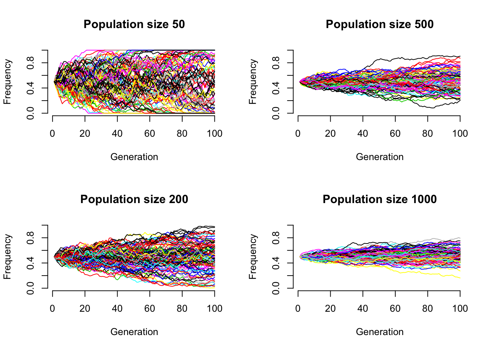
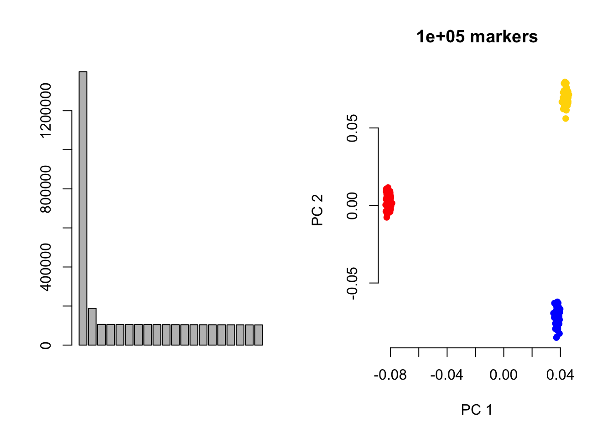
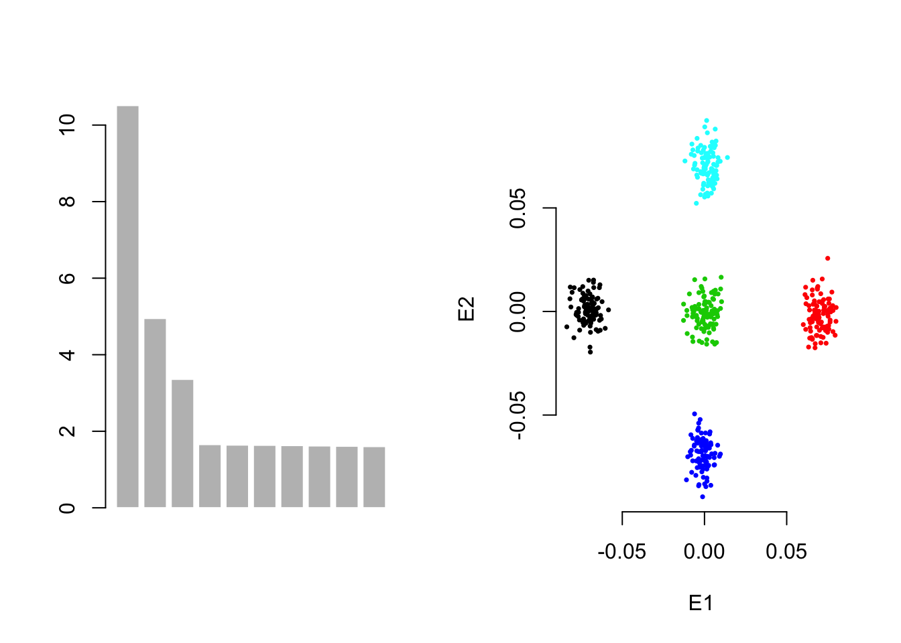
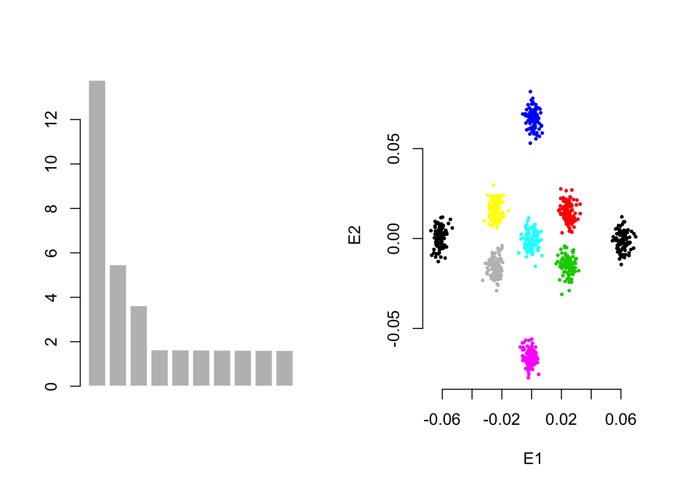
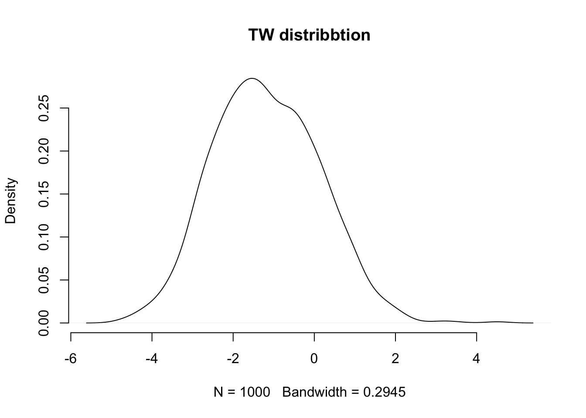

Chapter 4 Simulating population structure
A toy example for this Charpter can be found in gc5k’s Rpub
4.1 Genetic drift
As each locus follows binomial distribution, the genetic drift can be modelled \(\frac{\sqrt{pq}}{2n_e}\), in which \(n_e\) is the effective population size. 
4.2 Three pop
## [1] "Fst1=0.050000, Fst2=0.020000"## [1] "300 ind, 5000 marker"
4.3 Five pop
## [1] "Fst1=0.050000, Fst2=0.020000"## [1] "500 ind, 5000 marker"
4.4 Nine pop
## [1] "Fst1=0.050000, Fst2=0.020000"## [1] "900 ind, 10000 marker"
4.5 Wishart distribution simulation
R function rWishart can generate Wishart distribution easiliy.
## Artificial
S <- toeplitz((10:1)/10)
set.seed(11)
R <- rWishart(1000, 20, S)
dim(R) # 10 10 1000## [1] 10 10 10004.6 Distribution of the Wishart diagonal elements
4.7 Homo cohort
4.8 Heterogeneous cohort
4.9 Tracy-Widom distribution
R package RMTstat can help study Tracy-Widom distribution.
library(RMTstat)
plot(density(rtw(1000)), main="TW distribbtion", bty='n')